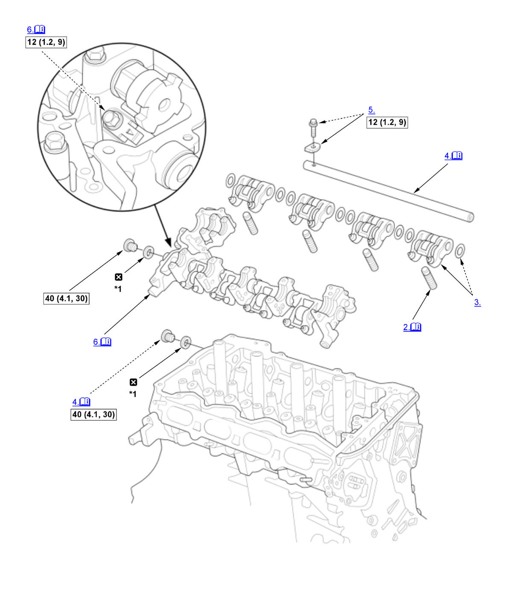

Rocker Arm Assembly Removal and Installation (K20C1) (2017 2018 2019 2020 2021): Installation: Procedure
NOTE:
Numbered call-outs in figure pertain to list numbers in following procedure.
Fig 1: Exploded View Of Rocker Arm Assembly Components With Torque Specifications For Installation (K20C1 - 2017-21)

Courtesy of HONDA, U.S.A., INC. |
Detailed information, notes, and precautions |
 |
Torque: N.m (kgf.m, lbf.ft) |
 |
Replace |
| *1 | Apply new engine oil on both sides. |
- Intake Rocker Arm Assembly - Reassemble
NOTE: If the intake rocker arm assembly is disassembled, reassemble the intake rocker arm assembly.
- Lost Motion Assembly - Install
NOTE: Apply new engine oil to the lost motion assembly.
- Exhaust Rocker Arm Assembly - Install
- Exhaust Rocker Shaft - Install
NOTE: After install the exhaust rocker shaft, remove the rubber band as it was installed when removing the exhaust rocker shaft assembly.
- Exhaust Rocker Shaft Cap - Install
- Intake Rocker Arm Assembly - Install
NOTE:
- Apply liquid gasket to the cylinder head mating surface of the No. 5 rocker shaft holder and to the inside edge of the threaded bolt holes.
- If the intake rocker arm assembly is disassembled, tighten the intake rocker shaft bolt (A) to the specified torque after installing the camshaft.
- Camshaft - Install
- Cam Chain Auto-Tensioner - Install
- Camshaft Timing - Check
- Valve Clearance - Adjust
- High Pressure Fuel Pump Base - Install
- CMP Sensor A and CMP Sensor B - Install
- Thermostat Housing - Install
- Vacuum Pump Holder - Install
- High Pressure Fuel Pump - Install
- Cylinder Head Cover - Install
- Charge Air Cooler Pipe - Install
NOTE: Make sure to review the hose band precautions before installing the charge air cooler pipe(s).
- EVAP Canister Purge Valve, Purge Joint, and Purge Pipe - Install
- PCM Assembly - Install
- 12 Volt Battery Base - Install
- Air Cleaner - Install
- 12 Volt Battery - Install
- Engine Coolant - Refill
- Fuel Leak (Low Pressure Side) - Check
1. Turn the vehicle to the ON mode, but do not start the engine. After the fuel pump runs for about 2 seconds, the fuel line will be pressurized. Repeat this two or three times, then check for fuel leakage. - Fuel Leak (High Pressure Side) - Check
- Ignition Timing - Inspect